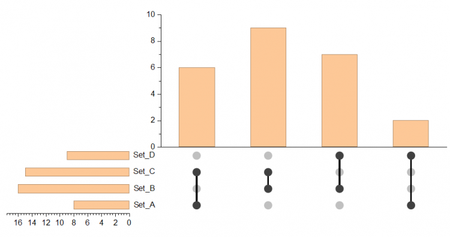

アップセットプロットを作成するには、区切り文字で区切られた集合所属情報の列を1つ選択するか、カテゴリ列またはバイナリ列を2つ以上選択してください。
データを選択します。
メニューから、プロット >カテゴリカル：アップセットプロットを選択して、plot_upsetダイアログを開きます。
| 入力データの種類 | アップセットプロットを作成する入力データタイプを指定します。
|
|---|---|
| 入力データ | 選択したデータタイプに応じて入力データを指定します。 |
| 区切り文字 | 入力データの種類で素データ（区切り文字）を選択した場合、集合を区切るための区切り文字を選択します。 |
| 交差 | 交差データの集計方法、およびデータをサブグループ化するかどうかを指定します。
|
| レイアウト | 棒グラフとドットプロットの配置方法を指定します。 |
| テンプレート | デフォルトでは組み込みテンプレートが選択されています。自動のチェックを外すと、ユーザ定義テンプレートを選択できます。 |
| 共通部分の集計を出力 | 共通部分の集計データを新しいシートに出力するかどうかを指定します。 |
| 出力データ | データをどこに出力するか指定します。 |
| 共通部分の並べ替え基準 | 共通部分の並べ替え方法を指定します。デフォルトでは、自動が選択されています。自動を選択しない場合、共通部分を昇順または降順で並べ替えるよう指定できます。 |
|---|---|
| 集合の並べ替え基準 | 集合の並べ替え方法を指定します。デフォルトでは、自動が選択されています。自動を選択しない場合、集合を昇順または降順で並べ替えるよう指定できます。 |
| 空の共通部分を非表示 | 集計データから、カウントが0の組み合わせを非表示にします。
ここで、空の共通部分とは、要素を1つも含まない共通部分を指します。ただし、要素を含む共通部分でも、集計方法が平均や合計の場合などには、値が0になることがあります。 入力データタイプ = 要約の場合、値が0の棒は非表示になりませんが、値が欠損値の棒は非表示になります。 |
| 集合なしの共通部分を非表示 | 表示されているどの集合にも属さない項目（集合数0）を表示するかどうかを指定します。 |
| 詳細 | 値、度、上位Nのいずれか、またはそれらを組み合わせて共通部分をフィルタできます。 |
このタブでは、UpSetプロットに追加パネルを追加します。項目のメタデータに基づく属性プロット（ヒストグラム、ボックスプロット、散布図など）を追加できます。
| 追加プロット数 | 追加するプロットの数を指定します。最大2つまで追加できます。 |
|---|---|
| 追加プロット 1/2 | 追加プロットに使用するデータを選択し、目的のプロットタイプを指定します。 |
UpSetPlot.OTPU (Originのプログラムフォルダにインストールされています)
アプセットプロット（英: Upset plot）は、3つを超える集合の共通部分を含むデータを表示するための可視化手法です。アップセットでは、共通部分を行列形式で可視化します。行は個々の集合、列はそれらの共通部分（またはその逆）に対応し、集合および共通部分の大きさは棒グラフで表されます。
| 必要なバージョン: Origin 2027以降 |